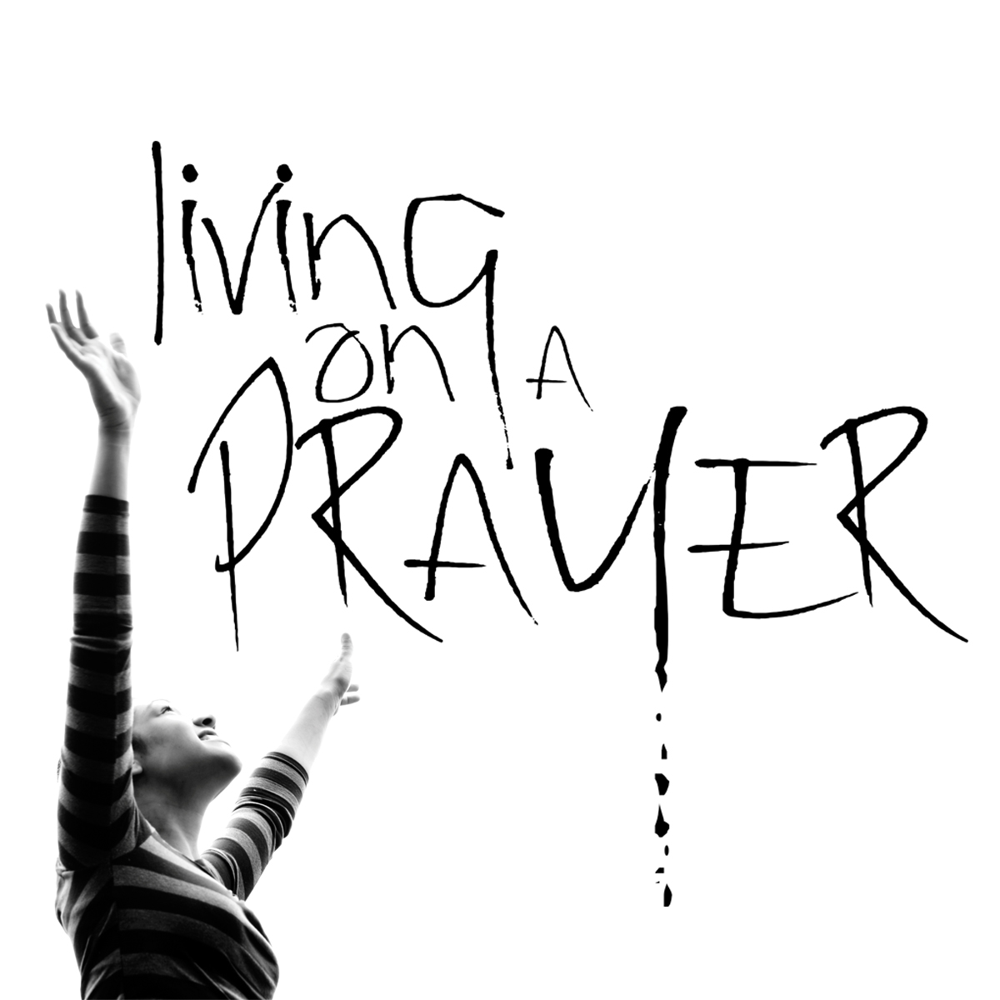

VIII Acto de Graduación
3 junio 2016 18:30 horas

1
Apertura
Presentación a cargo de Pilar Pérez, profesora de Educación Física, y Juan Francisco Martínez, profesor de Geografía

2
Entrada de los graduados
Suena "Living on a prayer" de Bon Jovi, interpretada por los alumnos de guitarra
3
Lectura de poemas
"Método de lectura", de Jose Antonio Labordeta, por Marina García. "No te rindas", de Mario Benedetti, por Héctor Fernández
4
"Cheque al portamor"
Sergio Matilla y Gonzalo Fernández, alumnos de 2º de Bachillerato, interpretan la canción de Melendi
5
Imposición de becas
Imponen becas Mamen Mesonero, profesora de Inglés, y Alicia Pérez, profesora de Lengua
Entregan poemas Iván Suárez, profesor de Economía, y Begoña Menéndez, profesora de Historia
Entrega regalos Mar Fernández, presidenta del AMPA
6
Baile
María Avila Lapikova, alumna de 2º de Bachillerato, baila un remix de canciones
7
"Mi paso por el IES"
Lectura a cargo de Alicia Escudero y Aroa Suárez, alumnas de 2º de Bachillerato
8
Proyección de video
Video realizado por el alumnado con fotos de su infancia y de su paso por el IES
9
Baile
David Escudero, alumno de 4º de ESO, baila un remix de canciones urbanas
10
Entrega de diplomas
Concepción Magadán y Ana Melero, Jefes de Estudios del IES, entregan diplomas a los mejores expedientes y a las matrículas de honor

11
Actuación del grupo de guitarra
Interpretan "Welcome to my life" de Simple Plan y "Hotel California" de The Eagles
12
Despedida
Reyes Revilla, directora del IES, dedica unas palabras a nuestros graduados
13
"Aftertaste"
Nadia Hidalgo, alumna de 2º de Bachillerato, interpreta la canción de Shawn Mendes
14
Aperitivo
En el patio interior del Centro, por cortesía del AMPA
15
Fin de actos organizados por el Centro
Organizadores
Marta Fernández Ramírez, Jefa del Dpto. de Actividades Extraescolares, y Claustro y AMPA del IES
Agradecimientos
Exmo. Ayuntamiento de San Andrés del Rabanedo - Sonido Gráficas Cartujo - Viveros Viver Jardin
El IES San Andrés no se hace responsable de las actividades organizadas por los alumnos fuera del centro